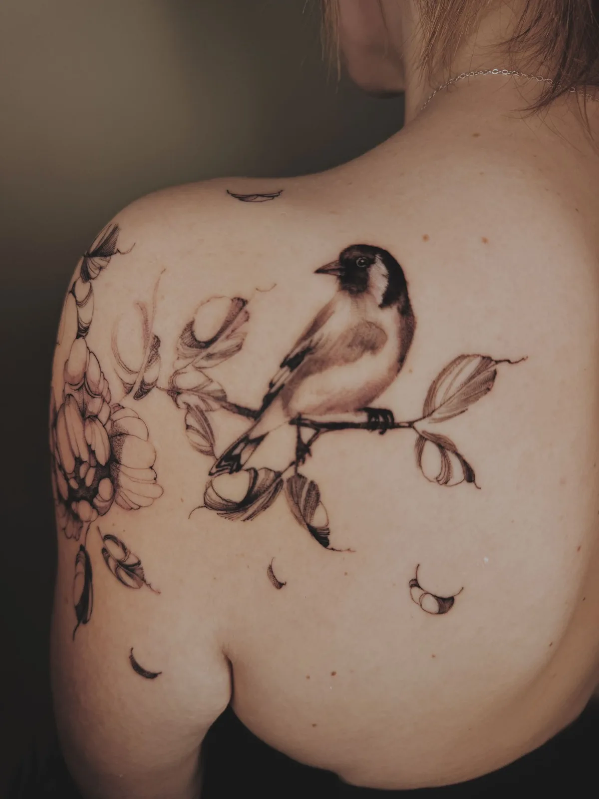
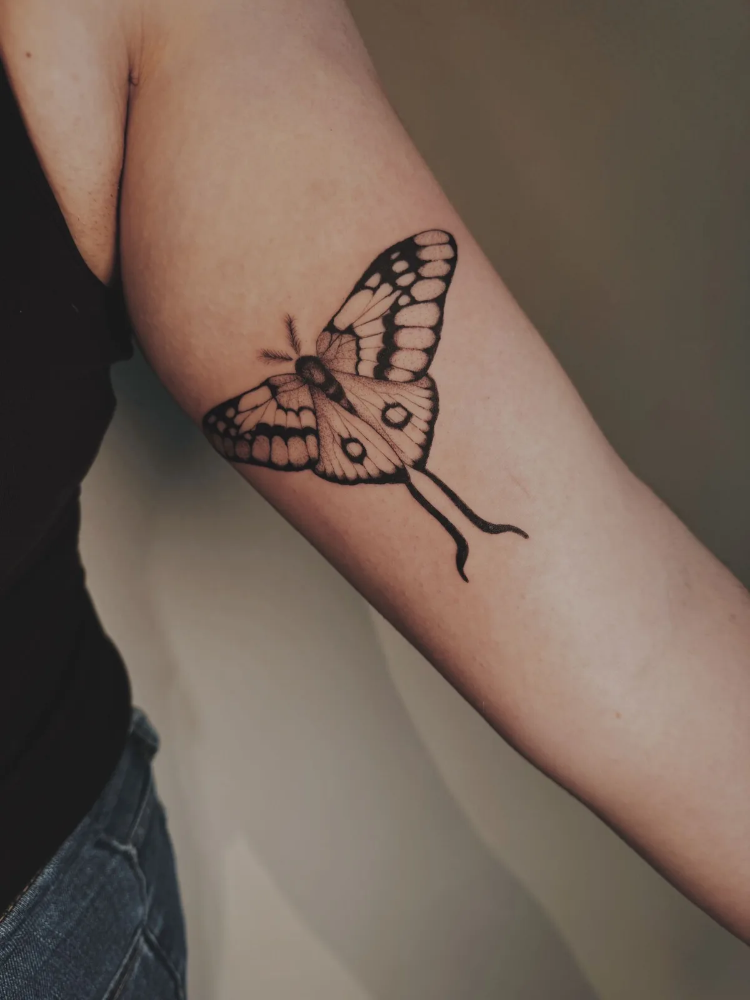
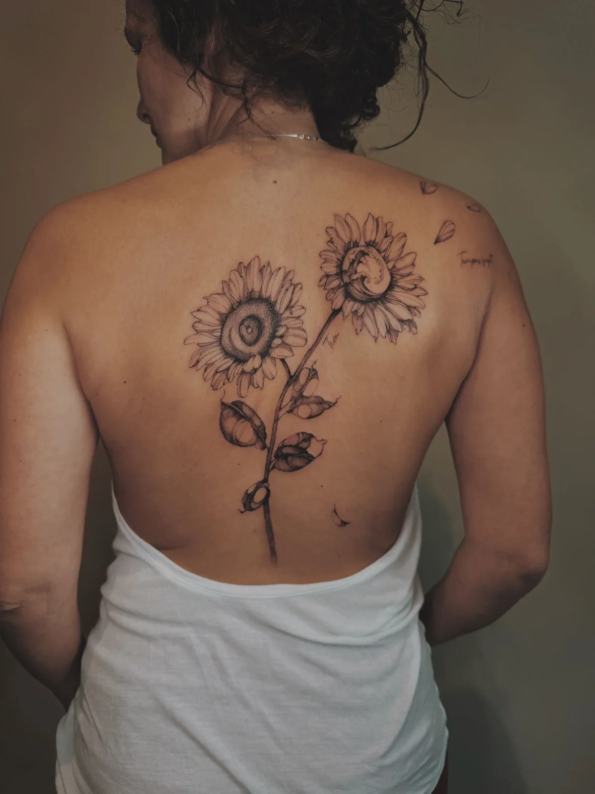
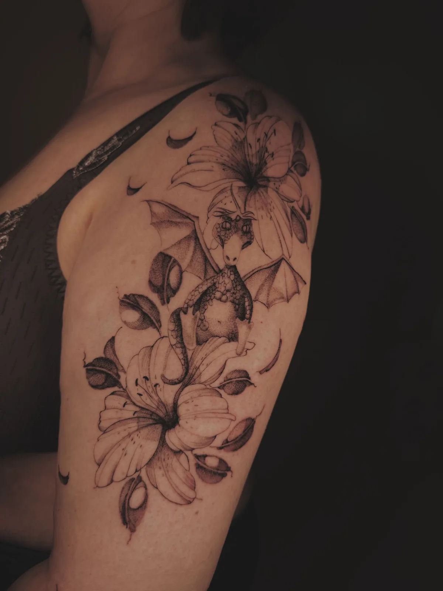
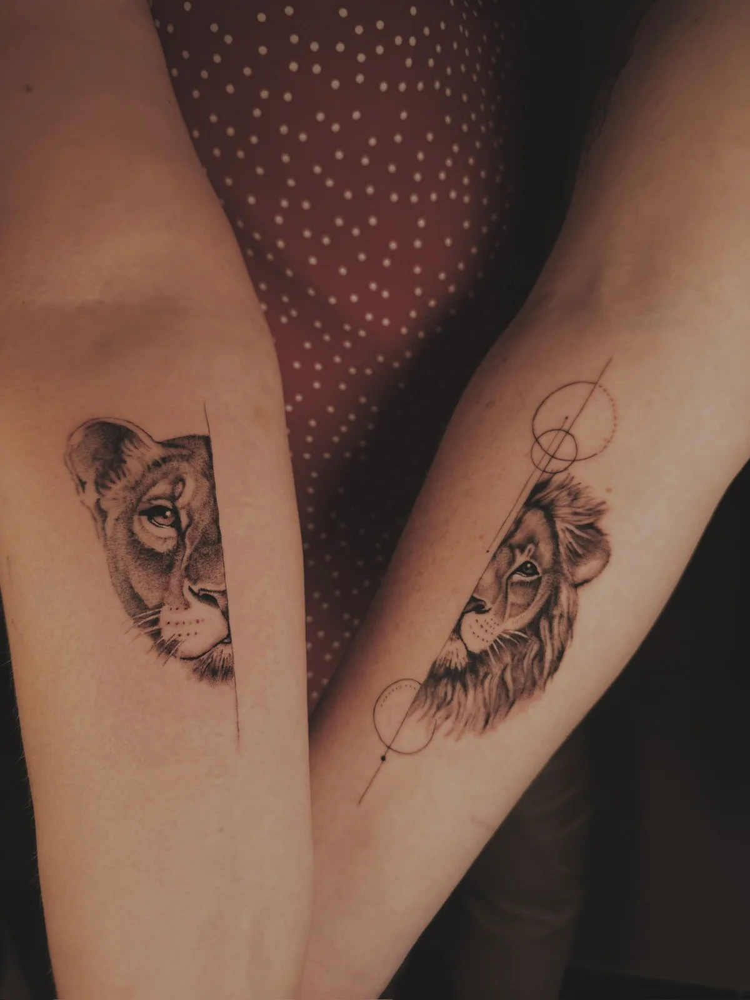
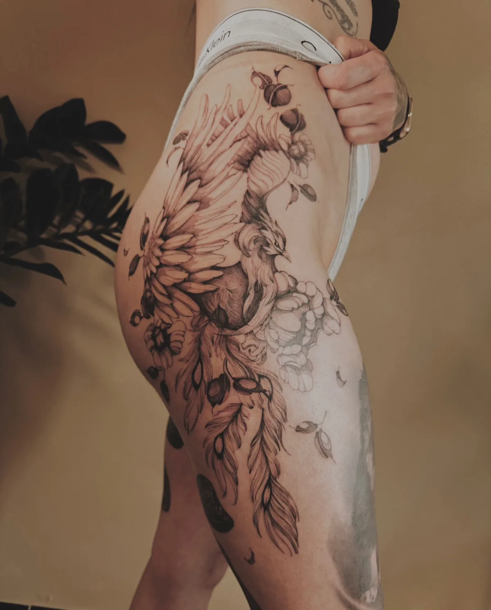
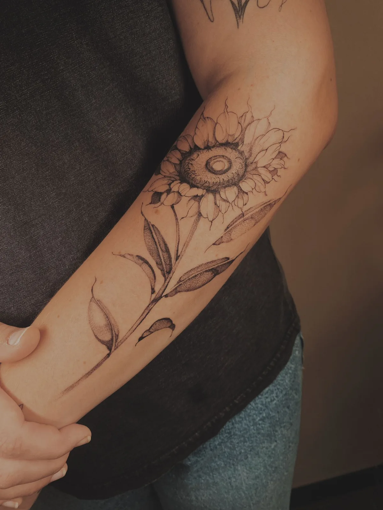
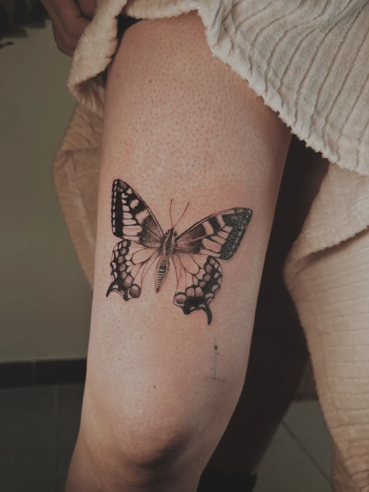
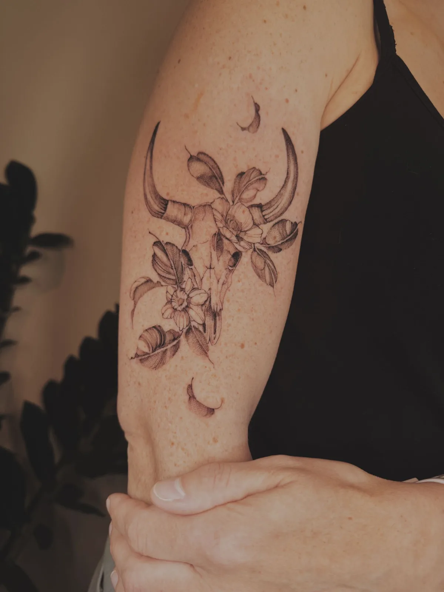
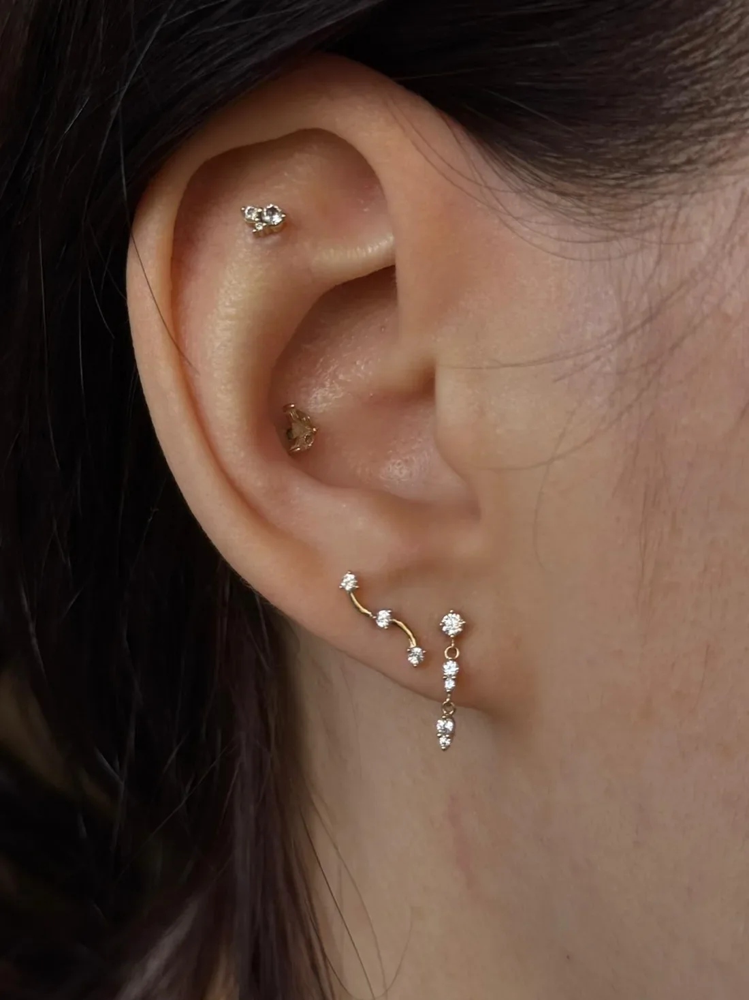

Het zachtere werk, uit de natuur.
Pioenen, zonnebloemen, vogels en vlinders. Ik spits me volledig toe op het fijnere werk en teken elk stuk op maat van jouw lichaam.








Nog veel meer stukken op Instagram.
@lye_noirJij het idee, ik de lijn.
Vertel me wat je wil en wat het voor je betekent. Ik werk het uit tot een ontwerp dat bij jou en je lichaam past.

Je boekt
Met een klein voorschot leg je je plekje vast. Dat bedrag gaat gewoon af van de prijs van je tattoo.
Ik teken
Je ontwerp maak ik de dag voor je afspraak. Ter plaatse bekijken we het samen en passen we aan waar nodig.
We zetten
Rustig en op je gemak, in de studio in de Aartrijkestraat. Betalen kan met Bancontact of cash.
Bijwerken is gratis
Binnen de zes maanden werk ik je tattoo gratis bij, behalve op vingers, handen en voeten.
Piercing en brows.
Vaste prijzen, zonder verrassingen. De eerste downsize en controle van een piercing die hier gezet werd, zijn gratis.

Piercing
Prijzen zonder juweel
- OorlelHet paar: € 50
- € 30
- Helix, tragus, conch, flat, rook of daith
- € 35
- Neus, septum, wenkbrauw of navel
- € 35
- Verticale tragus of industrial
- € 45
- Juweel wisselen
- € 5
Nazorg met de After piercing spray van NeilMed.
Brows
Permanente make-up, touch-up na 4 tot 10 weken
- Nano BrowsTouch-up € 100
- € 350
- Combo BrowsTouch-up € 95
- € 300
- Soft Ombre of Powder BrowsTouch-up € 85
- € 270
Twijfel je welke techniek bij jou past? Vraag het gerust.
Tattoo nummer 14. Niet de laatste.
75 reviews op Google
Gewoon WAUW! Na een gesprek met Kimberly, creëerde zij een prachtig ontwerp waar het gevoel ook volledig juist in zat.
Tattoo nummer 14 staat erop, allemaal van Kimberly, maar het is zeker niet de laatste.
Ze maakt ook altijd haar eigen ontwerpen van wat je wilt, wat je tattoo nog zoveel meer uniek maakt!
Vertel me je idee.
Een paar woorden, een foto of een gevoel is genoeg om te beginnen. Je bericht staat daarna klaar in WhatsApp.
Liever meteen online boeken